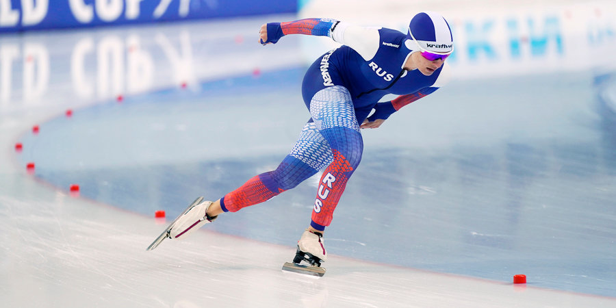

Что такое конькобежный спорт?

Конькобежный спорт(скоростной бег на коньках) – олимпийский вид спорта, в котором необходимо преодолеть определенную дистанцию на коньках быстрее, чем это сделают соперники.
В настоящее время соревнования по конькобежному спорту проходят по замкнутому кругу.
Соревнования по конькобежному спорту проводятся отдельно для мужчин и для женщин.
The Olympic sport in which it is necessary to overcome a certain distance on skates faster than the opponents will do. Currently, competitions in riding sports are held in a closed circle. Speaking sports competitions are held separately for men and women.